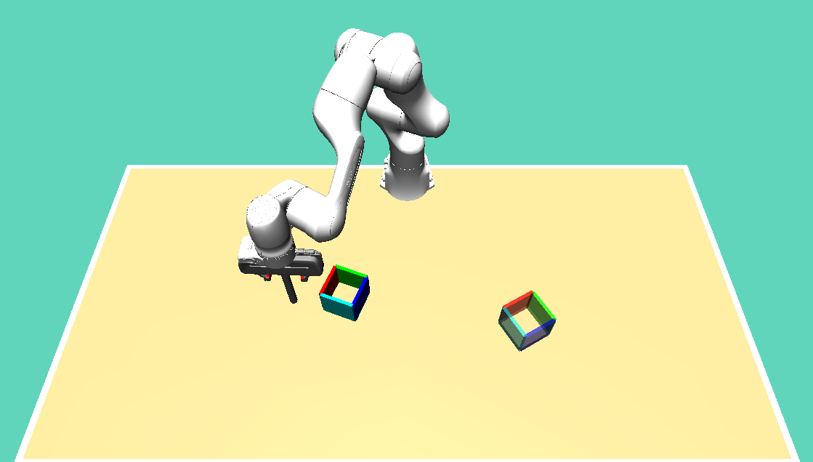

Abstract
Diffusion policy is a state-of-the-art approach for robot action generation conditioned on observations. However, to train the policy, existing methods typically assume access to clean expert demonstrations, which limits their applicability when clean expert data are scarce. To overcome this limitation, we adapt a deconvolution-based method from the image generation domain to robotic policy learning. The resulting framework achieves performance comparable to a model trained on an entirely clean dataset, while requiring as little as 2% of the demonstrations to be clean. We further demonstrate that clean demonstrations from related tasks can be leveraged through transfer learning to improve performance on the target task. The proposed approach is validated in both simulations and real-world experiments, where it achieves success rates and completion time comparable to the clean expert data baseline.
How SFBD-RA works
SFBD-RA adapts stochastic forward-backward deconvolution from image generation to robot actions. The denoising target changes from pixels to actions, conditioned on the observation; the rest of the pipeline stays the same.
- Pretrain on a small clean set Train the denoiser on 2–10% clean demonstrations, so it starts close to the true action distribution instead of from random weights.
- Backward sampling Use the current denoiser to denoise the actions in the noisy demonstrations, given their observations.
- Denoiser update Fine-tune the denoiser on the denoised dataset. Repeat steps 2 and 3 for K iterations.
Under idealized assumptions (only actions are corrupted, by known Gaussian noise; the noisy dataset is unlimited; the training data cover the observations the expert visits), the KL divergence between the true action distribution and the model's distribution does not increase from one iteration to the next. The proof, for single-step actions, is in the paper's appendix.
Simulation results
We evaluate on three tasks from the D3IL benchmark in MuJoCo: avoiding, pushing and aligning. Results are averaged over six seeds.

Synthetic noise on the aligning task
Gaussian noise is injected into the actions at two levels. SFBD-RA needs two to four iterations to reach a success rate and pose error comparable to the clean baseline.


Human demonstrations and transfer learning
The original D3IL human demonstrations vary in quality, so we treat them as containing real-world noise. Clustering by path length, jerk and curvature separates a consistent set, from which 10% is sampled as the clean set.
| Metric | Avoiding | Pushing | Aligning | ||||
|---|---|---|---|---|---|---|---|
| Base | SFBD-RA | Base | SFBD-RA | Base | SFBD-RA | Transfer | |
| SR (%) | 63.25 ± 0.5 | 78 ± 2.76 | 49.8 ± 4.50 | 63.60 ± 8.96 | 87 ± 3.03 | 84 ± 1.6 | 79.4 ± 3.44 |
| Error | N/A | N/A | 0.13 ± 0.01 | 0.09 ± 0.02 | 0.06 ± 0.01 | 0.07 ± 0.01 | 0.09 ± 0.01 |
| Ent. | 0.88 ± 0.02 | 0.69 ± 0.01 | 0.33 ± 0.05 | 0.44 ± 0.07 | 0.34 ± 0.06 | 0.28 ± 0.05 | 0.09 ± 0.05 |
| Time (frames) | 66.4 ± 0.51 | 63.43 ± 0.33 | 249 ± 2.75 | 249.31 ± 6.62 | 171.43 ± 4.46 | 170.19 ± 5.09 | 187.11 ± 5.93 |
SR: success rate. Error: final pose error. Ent.: behavior entropy, the diversity of strategies. Time: completion time.
Real-robot experiments
A Franka Emika Panda pushes a 3D-printed box with markers on each side to a target pose, tracked by an external camera. Each policy is tested on 10 random start and target poses, twice each, for 20 episodes per policy. SFBD-RA beats the policy trained directly on noisy data in success rate and pose error at both noise levels, even with only 2% clean demonstrations.

| Metric | σ = 0.002 | σ = 0.004 | ||||||
|---|---|---|---|---|---|---|---|---|
| Clean | Noisy | SFBD-RA 2% | SFBD-RA 10% | Clean | Noisy | SFBD-RA 2% | SFBD-RA 10% | |
| SR (%) | 45 | 20 | 45 | 50 | 25 | 0 | 20 | 30 |
| Error | 0.53 | 0.57 | 0.39 | 0.26 | 0.54 | 0.60 | 0.28 | 0.46 |
| Ent. | 0.1 | 0.0 | 0.0 | 0.1 | 0.1 | 0.0 | 0.0 | 0.1 |
| Time (s) | 20.98 | 26.04 | 29.67 | 34.62 | 17.98 | N/A | 29.68 | 31.72 |
Sensitivity to dataset size
The 1000 human demonstrations for aligning are split into a consistent cluster (638) and an inconsistent cluster (362). Starting from all inconsistent demonstrations, we add consistent ones to reach 600 and 800 in total. SFBD-RA improves the success rate at every size.
| Metric | Consistent | Inconsistent | Dataset 600 | Dataset 800 | |||
|---|---|---|---|---|---|---|---|
| Base | SFBD-RA | Base | SFBD-RA | Base | SFBD-RA | ||
| SR (%) | 64.20 ± 4.26 | 63.80 ± 4.50 | 73.4 ± 6.65 | 71.83 ± 5.55 | 76.4 ± 1.5 | 70.83 ± 5 | 80 ± 3.58 |
| Error | 0.13 ± 0.01 | 0.09 ± 0.01 | 0.14 ± 0.03 | 0.11 ± 0.02 | 0.10 ± 0.02 | 0.1 ± 0.01 | 0.0895 ± 0.0256 |
| Ent. | 0.06 ± 0.03 | 0.08 ± 0.03 | 0.14 ± 0.06 | 0.21 ± 0.04 | 0.23 ± 0.03 | 0.22 ± 0.03 | 0.27 ± 0.05 |
| Time (frames) | 185.05 ± 4.32 | 204.90 ± 2.16 | 188.38 ± 1.66 | 194.04 ± 5.11 | 188.85 ± 4.39 | 191 ± 10.1 | 183.09 ± 8.72 |
Code and citation
Code is available through an anonymized repository: link to be added.
Citation details will be added after the review process.